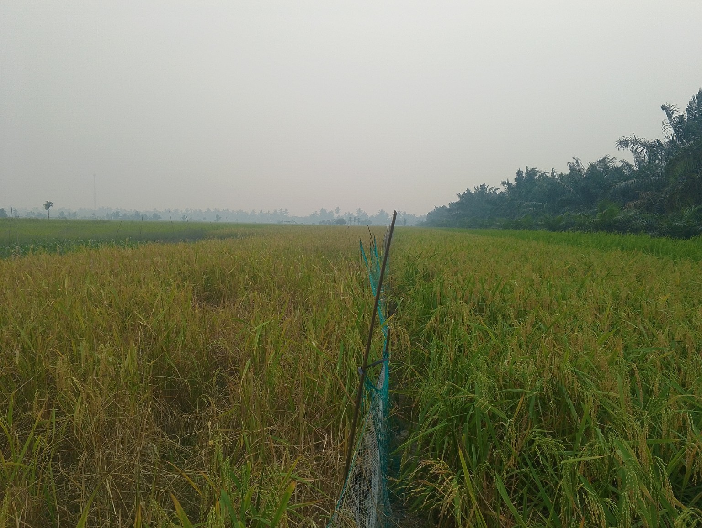
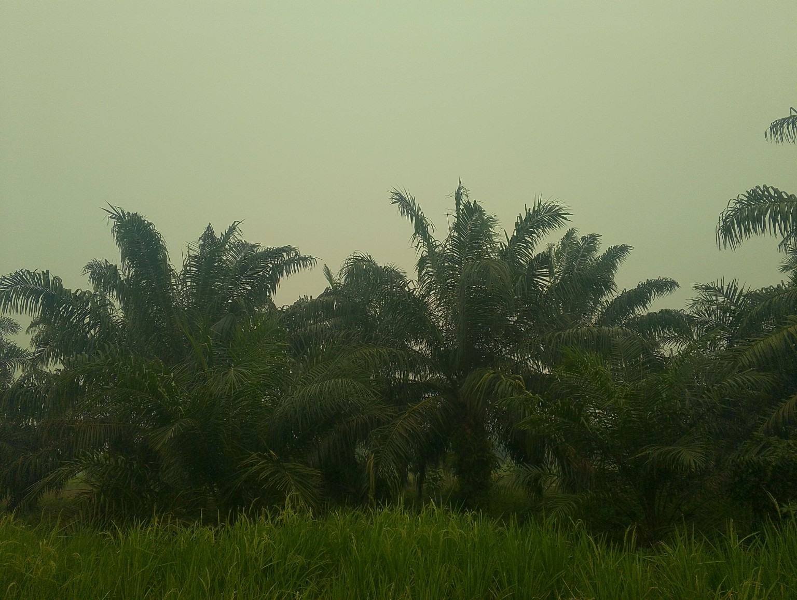
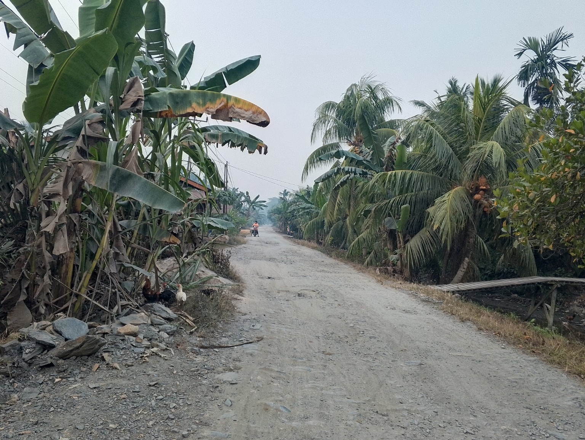
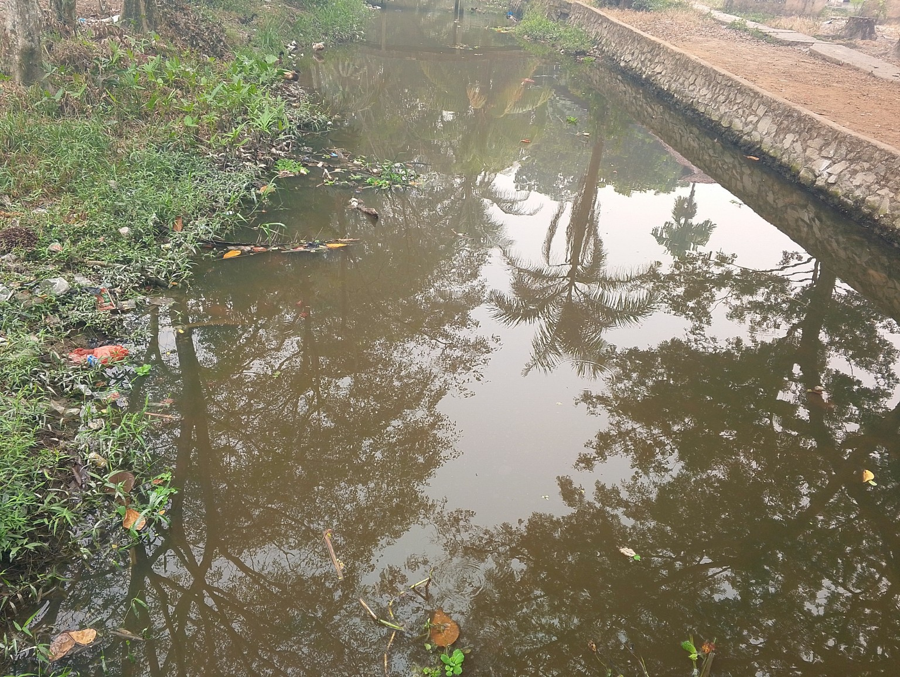
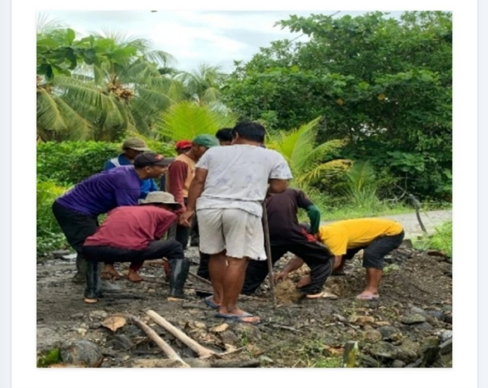
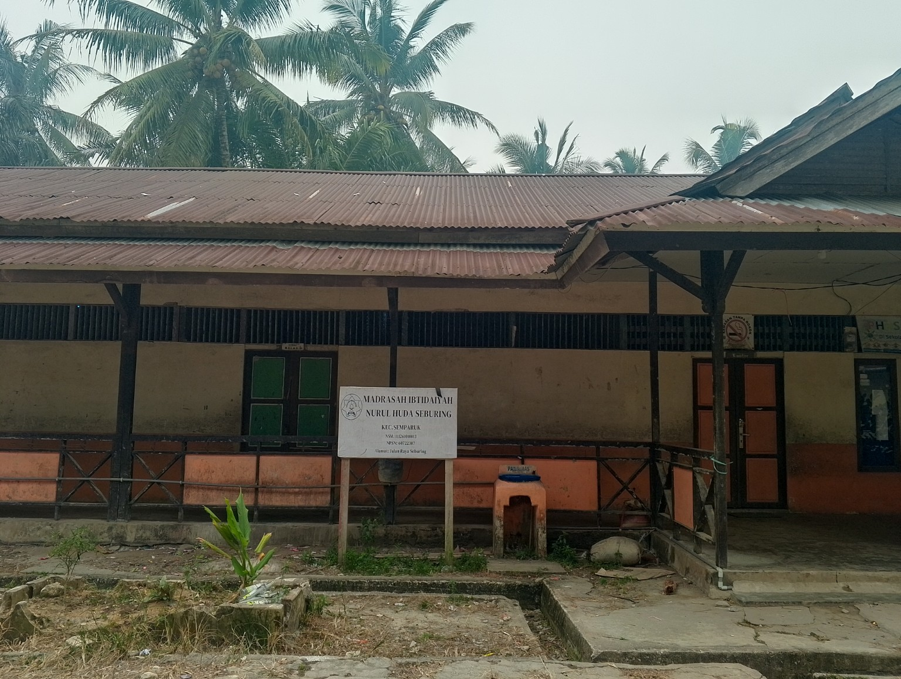
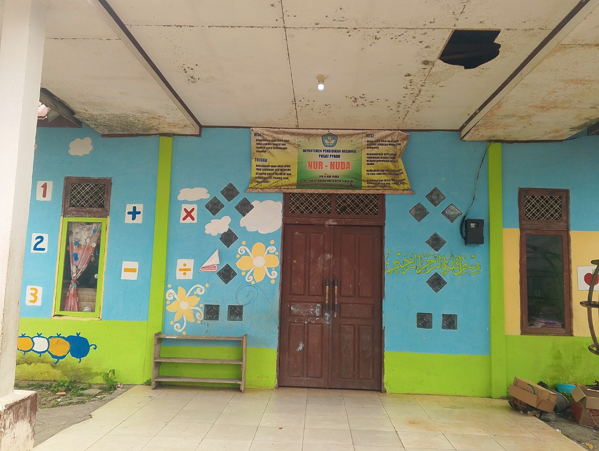
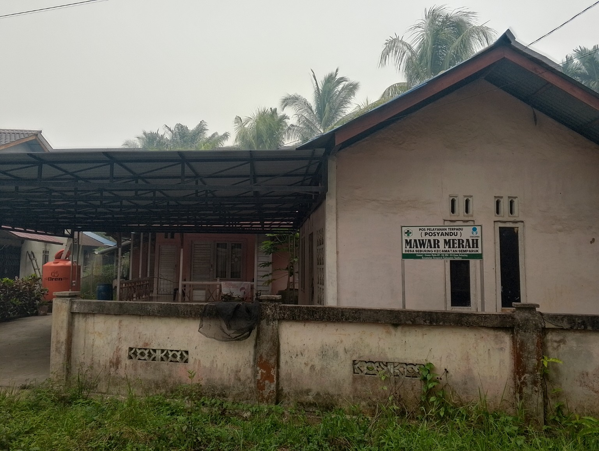
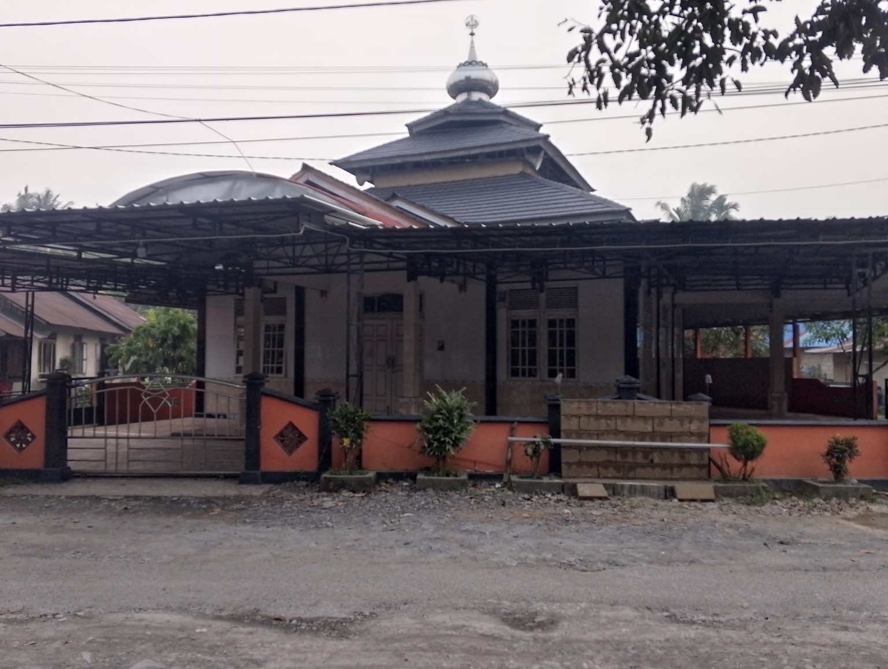

Dokumentasi
Galeri Desa Seburing
Sembilan foto pilihan Desa Seburing, disusun sesuai urutan dokumentasi.









Sembilan foto pilihan Desa Seburing, disusun sesuai urutan dokumentasi.








